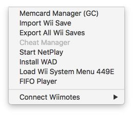
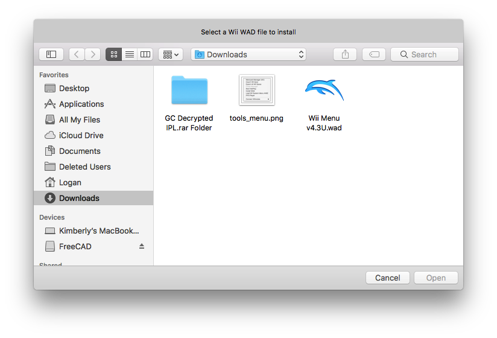
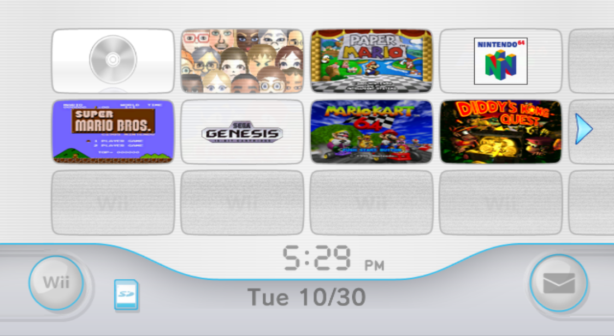

THE DOLPHIN GUIDE
Welcome to the Dolphin Guide.
This is a guide for the Dolphin Emulator>
Adding the Wii Menu to dolphin
We will be adding the Wii Menu to dolphin
You will need the following file to do this:
Once you've downloaded the file open dolphin
Click tools.

Then click Install WAD
You should see the file browser dialog.

Locate to your WAD file
Then double click it
The dialog will be gone
Now click on tools again
Now click load system menu
Yours will be blank but I have installed some WADs on mine.

Now to get some WADs for your wii menu software
I M P O R T A N T : THE WADS YOU GET MUST BE FOR NORTH AMERICAN WII : I M P O R T A N T
Heres a game you can install
Just do the install wad tool in the menubar to install it to the Wii Menu